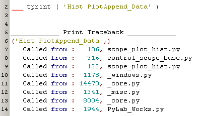
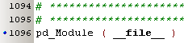
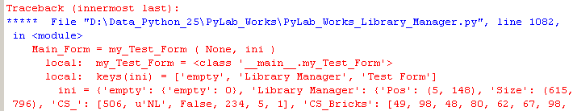
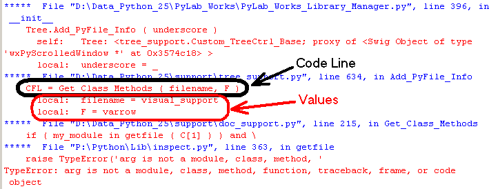
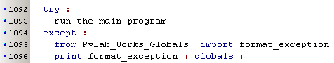

Debugging & Testing  (march 2009)
(march 2009)
Application Designer / Domain Expert / Control Designer / Core Developer
Introduction
PyLab_Works and it's associated programs have many logging, debugging and testing tools, some are always present, some must be switched on explicitly by command line flags and a few other mechanisms.
ToDo
exprint = Print + TraceBack
You can use the exprint procedure just as the print procedure (remember the print statement is obsolete from Python version 2.6 ), but the exprint procedure will add full traceback information (first caller at the top).

Debug(file) Flag
Through the function pd (info_line) in the module General_Globals, debug information will be shown in the stdout and / or a log file with the name _pd_FileName. There's a special function pd_Module (__file__) which should be placed at the end of every module, to log the order of the imports of PyLab_Works own files.

Main Exception Capture
All main programs have an exception capture on the outer most statement. This exception capture should never occur, but if it does, it gives detailed information about the exception. from all error lines, specified in the traceback, the exception capture tries to evaluate the values, and in case of list, tuples, dict, etc it tries to calculate the length / keys, before calculating the final value. This is very convenient way to see what goes wrong e.g. in case of an index out of range error.

....

The main exception capture is inserted with:
